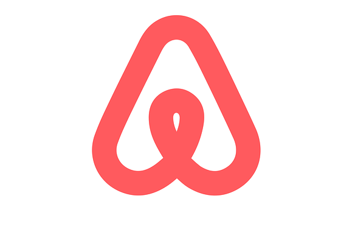

With a passion for using data to solve problems, I have a strong background in data cleaning, preparation, exploratory analysis and developing insightful visualizations. I am proficient in R, SQL and Tableau. This website is to demonstrate my analytical skills.


Through this project, I demonstrated a great understanding of SQL—how to write SQL queries to retrieve and manipulate data from relational databases.
I demonstrated strong skills in data analysis by being able to write complex queries to extract data, analyze large dataset to extract meaningful insights.
I demonstrated understanding of data science concepts with R through exploratory data analysis and logistic regression to effectively build predictive models. With the ability to deploy tidyverse, dplyr and stargazer packages and work with categorical variables.
Leveraging an earlier project where I used SVM to identified whether a loan would be paid fully or partially, I made a new project with Naive Bayes for a better uderstanding of which model performed better. Find out more from the README on github.

The Vizzie was built in correlation with the SQL-Covid-Project above. It demonstrate my skills in communicating clearly through visualizations - the Global impact of COVID19 and forcast for select countries. Hover on the world map for more info.

This North Carolina AirBnB project focused on factors that make AirBnB attractive to hosts and guests. I discovered guests prefer a single-bedroom accomodations in an incredible neighborhood with December being the busiest month.